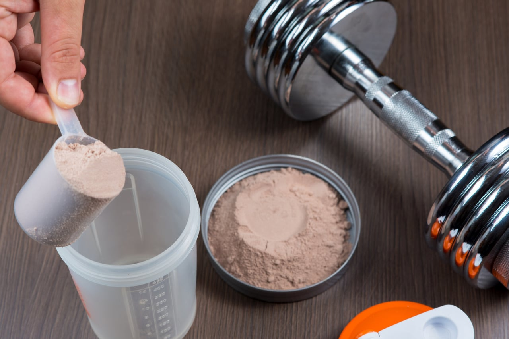

OVO
O ovo é um alimento nutritivo e versátil, importante em diversas dietas ao redor do mundo. Aqui estão alguns pontos principais sobre o ovo: Composição Nutricional Proteínas: Um ovo médio contém cerca de 6 a 7 gramas de proteína de alta qualidade, com aminoácidos essenciais. Gorduras: Aproximadamente 5 gramas de gordura total, sendo a maior parte na gema. Carboidratos: Menos de 1 grama por ovo. Vitaminas e Minerais: Rico em vitaminas do complexo B (como B12 e riboflavina), vitamina D, além de minerais como ferro e zinco. É também uma excelente fonte de colina. Benefícios para a Saúde Desenvolvimento Muscular: As proteínas ajudam na construção e reparação muscular. Saúde Ocular: Contém antioxidantes como luteína e zeaxantina, que protegem a saúde dos olhos. Controle de Peso: Promove saciedade, auxiliando no controle do apetite. Saúde do Coração: Pode ter um efeito neutro ou positivo na saúde cardiovascular para a maioria das pessoas. Em resumo, os ovos são um alimento altamente nutritivo com diversos benefícios para a saúde, embora algumas considerações sobre colesterol e alergias devam ser observadas.
CARNE
A carne bovina é uma fonte importante de proteína e nutrientes em várias dietas. Aqui estão os principais pontos sobre ela: Composição Nutricional Proteínas: Excelente fonte de proteína de alta qualidade, com cerca de 26 gramas em 100 gramas de carne magra cozida. Gorduras: O teor de gordura varia conforme o corte; carne magra tem cerca de 10 gramas de gordura por 100 gramas, enquanto cortes mais gordos podem ter muito mais. Recomenda-se escolher cortes magros. Carboidratos: Praticamente isenta de carboidratos. Vitaminas e Minerais: Rica em vitaminas do complexo B (como B12 e niacina) e minerais como ferro heme, zinco, fósforo e selênio. Benefícios para a Saúde Desenvolvimento Muscular: Contribui para a construção e manutenção muscular devido ao alto teor de proteínas. Saúde Hematológica: O ferro heme é crucial para a formação de glóbulos vermelhos, ajudando a prevenir anemia. Função Imunológica: O zinco é importante para o sistema imunológico e cicatrização de feridas. Energia e Metabolismo: As vitaminas do complexo B ajudam na conversão de alimentos em energia. Em resumo, a carne bovina é nutritiva, mas seu consumo deve ser equilibrado e consciente, levando em conta tanto a saúde quanto questões ambientais.
WHEY PROTEIN
O whey protein é um suplemento derivada do soro do leite, um subproduto da fabricação de queijo, popular entre atletas e pessoas que desejam aumentar a ingestão de proteínas de forma prática. Whey Protein Concentrado: Contém 70-80% de proteína, além de carboidratos (lactose) e gordura. É o tipo mais comum e acessível. Whey Protein Isolado: Contém 90% ou mais de proteína, com a maior parte da gordura e lactose removidas. Ideal para quem tem intolerância à lactose. Whey Protein Hidrolisado: Pré-digerido, facilitando a absorção e reduzindo reações alérgicas. Geralmente mais caro, usado para acelerar a recuperação. Benefícios para a Saúde Construção Muscular: Rico em aminoácidos essenciais, incluindo leucina, que ajuda na síntese muscular. Perda de Peso: Aumenta a saciedade e reduz o apetite. Recuperação Pós-Treino: Auxilia na recuperação após exercícios intensos. Saúde Imunológica: Contém imunoglobulinas que podem apoiar a função do sistema imunológico. Preocupações e Considerações Intolerância à Lactose: O concentrado pode causar problemas, enquanto isolado e hidrolisado têm menos lactose. Alergias: Algumas pessoas podem ser alérgicas ao whey ou leite, sendo proteínas vegetais uma alternativa. Qualidade do Produto: Variável entre marcas; escolha produtos testados e de fabricantes respeitáveis. Excesso de Proteína: O consumo excessivo pode sobrecarregar os rins, especialmente em pessoas com problemas renais. Em resumo, o whey protein é um suplemento eficaz para aumentar a ingestão de proteínas, especialmente útil para atletas. Deve ser usado com moderação, como parte de uma dieta equilibrada, e é aconselhável consultar um profissional de saúde em caso de condições específicas.
FRANGO
O peito de frango é uma fonte popular de proteína magra e nutritiva. Aqui estão os principais pontos sobre ele: Composição Nutricional Proteínas: Uma porção de 100 gramas de peito de frango cozido (sem pele) contém cerca de 31 gramas de proteína de alta qualidade, ideal para construção e reparação muscular. Gorduras: Relativamente baixo em gordura, com aproximadamente 3,6 gramas por porção e cerca de 1 grama de gordura saturada. Remover a pele reduz ainda mais o teor de gordura. Carboidratos: Praticamente isento de carboidratos, tornando-se uma boa opção para dietas baixas em carboidratos. Vitaminas e Minerais: Boa fonte de vitaminas do complexo B (como niacina e B6) e minerais como fósforo, selênio e zinco. Benefícios para a Saúde Construção Muscular: A alta proteína auxilia na construção e recuperação muscular, sendo ideal para atletas. Controle de Peso: Baixo em gordura e carboidratos, ajuda a controlar o peso e a ingestão calórica. Saúde Cardiovascular: Menor teor de gordura saturada e colesterol contribui para uma dieta saudável para o coração. Facilidade de Digestão: Fácil de digerir, é uma boa escolha para pessoas com problemas digestivos.Em resumo, o peito de frango é uma opção nutritiva e versátil, com vários benefícios para a saúde quando preparado de maneira saudável.

Caso queira saber mais a respeito sobre as proteinas, segue abaixo um vídeo explicativo sobre o assunto: